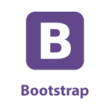

Angular
Un framework. Movil & escritorio

Bootstrap
La biblioteca de componentes front-end más popular del mundo.
Bicyle
Diseña hermosas Apps.
Un framework. Movil & escritorio
La biblioteca de componentes front-end más popular del mundo.
Diseña hermosas Apps.
Bootstrap es un kit de herramientas de código abierto para desarrollar con HTML, CSS y JS. Cree prototipos rápidamente o cree toda su aplicación con nuestras variables y mixins Sass, sistema de cuadrícula receptiva, componentes precompilados extensos y complementos potentes creados en jQuery..
Angular es un framework para aplicaciones web desarrollado en TypeScript, de código abierto, mantenido por Google, que se utiliza para crear y mantener aplicaciones web de una sola página. Su objetivo es aumentar las aplicaciones basadas en navegador con capacidad de Modelo Vista Controlador (MVC), en un esfuerzo para hacer que el desarrollo y las pruebas sean más fáciles.
Flutter es el kit de herramientas de UI de Google para realizar hermosas aplicaciones, compiladas nativamente, para móvil, web y escritorio desde una única base de código.